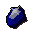
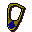
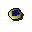

Sapphire

| Config name | sapphire |
| Item id | 1607 |
| Value | 250 gp |
| Weight | 2g |
| Members | No |
| Tradeable | Yes |
| Stackable | No |
| Category | legends_gem |
| Defined in | scripts/skill_crafting/configs/jewellery/cut_gems.obj |
Sapphire
This looks valuable.
Show 1 ground spawn on the world map → Open in knowledge graph →
How to make
| Skill | Level | XP | Ingredients | Tool | How | Where | Makes |
|---|---|---|---|---|---|---|---|
| Crafting | 20 | 50.0 | use on item | 1 |
Used to make
| Skill | Level | XP | Ingredients | Tool | How | Where | Makes |
|---|---|---|---|---|---|---|---|
| Crafting | 20 | 55.0 | interface | furnace |  Sapphire necklace | ||
| Crafting | 20 | 40.0 | interface | furnace | |||
| Crafting | 24 | 65.0 | interface | furnace |  Sapphire amulet |
Sold at
| Shop | Shopkeeper | Stock |
|---|---|---|
| Gem Trader. | 1 | |
| Ardougne Gem Stall. | 2 | |
| Herquin's Gems. | 1 |
Ground spawns
| Area | Coordinates | Level | Count | Map |
|---|---|---|---|---|
| Deserted Keep | 3170, 3885 | 0 | 1 | view |
Referenced in scripts
scripts/drop tables/scripts/kalphite_queen.rs2scripts/levelup/scripts/levelup_unlocks_crafting.rs2scripts/macro events/scripts/general/macro_event_mysterious_old_man.rs2scripts/macro events/scripts/general/macro_event_strange_box.rs2scripts/skill_crafting/scripts/jewellery/jewellery.rs2scripts/skill_fishing/scripts/fishing_spots/memberfish.rs2